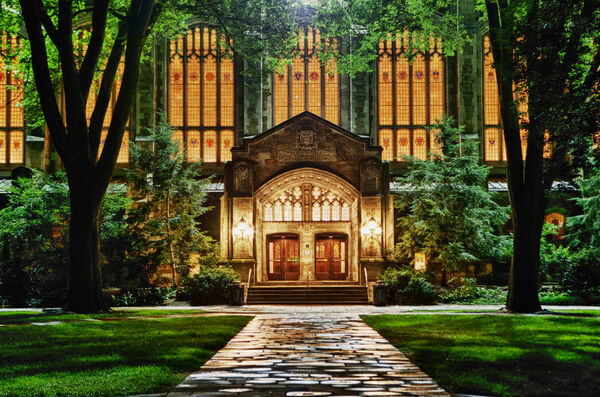
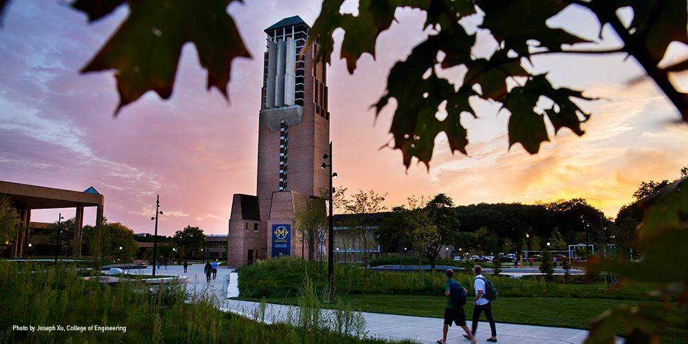
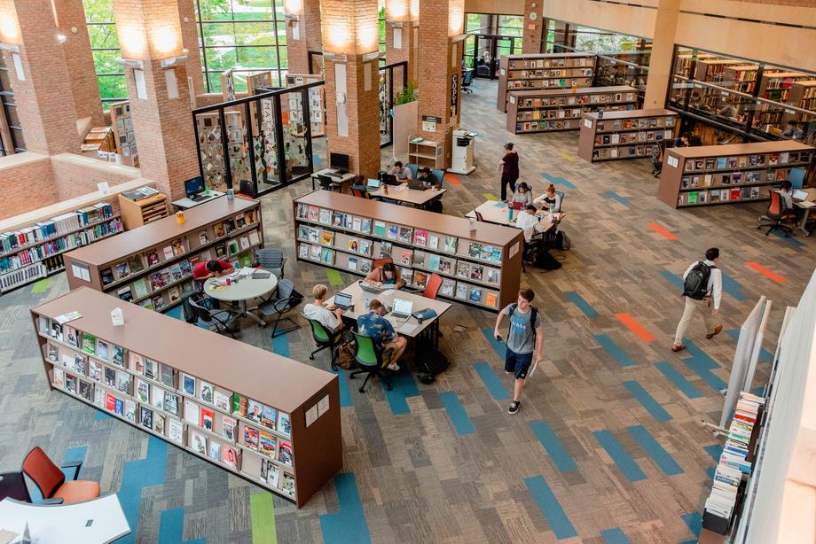

Discover what makes studying at UofM a unique and rewarding experience.
At the University of Michigan, you'll find a wealth of resources to help you succeed academically, from state-of-the-art libraries and study spaces to expert tutoring and academic advising. Whether you're preparing for exams, working on group projects, or conducting research, UofM has everything you need to excel in your studies.
General Academic Support
UofM offers a wide range of academic support services to help you achieve your goals, including tutoring, writing assistance, and study groups. Whether you're struggling with a par ticular subject or looking to improve your study skills, UofM has the resources you need to succeed.
Sweetland Center for Writing
The Sweetland Center for Writing supports student writing at all levels and in all forms and modes. Sweetland offers one-to-one tutoring for undergraduate and graduate students in our faculty-led Writing Workshop and undergraduate Peer Writing Center, and teaches writing courses from the undergraduate to the graduate level. Sweetland also provides support for all multilingual and international undergraduate students.
English Language Institute
ELI exclusively serves members of the University of Michigan community with English for Academic Purposes courses and resources, GSI preparation, and TESOL courses that prepare students to teach English as a second or foreign language.
Math Lab
The Math Lab provides free tutoring for mathematics courses numbered through 217. Though help is not regularly available for other courses, we will attempt to answer the questions of any U-M student who comes to us for mathematics help.
UMSI Programming Peer tutoring
UMSI Programming Peer Tutoring Information Available for the below courses:
- SI 106 Programs, Information, and People
- SI 206 Data-Oriented Programming
- SI 506 Programming I
- SI 507 Intermediate Programming
- General Python support
To Book Appointments with our Programming Peer Tutors
If you have questions regarding the Programming Peer Tutoring, you can email Professor Anthony Whyte at arwhyte@umich.edu and/or the UMSI Academic Success Team at umsi.academicsuccess@umich.edu for support.
Study Spaces
UofM offers a variety of study spaces to suit your needs, from quiet libraries and computer labs to collaborative workspaces and outdoor study areas. Whether you prefer to study alone or with a group, you'll find the perfect spot to focus and get your work done.

Central Campus
Central Campus is home to many of U-M's academic buildings, including the Ross School of Business and the College of Literature, Science, and the Arts. It's also home to the iconic Michigan Union and the University of Michigan Museum of Art.

North Campus
North Campus is one of the most underappreciated places on campus. It is home to the College of Engineering, Stamps School of Art and Design, Taubman College of Architecture and Urban Planning, and the School of Music, Theatre & Dance (SMTD).

U-M Library
The University of Michigan Library is one of the largest university library systems in the United States. There are several libraries to study at during you time here. From private rooms, to work stations and comfortable sitting areas.